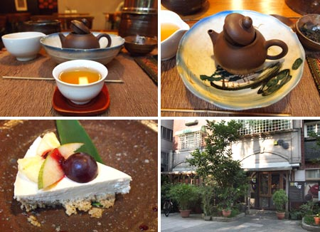
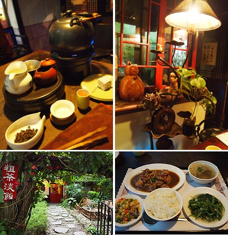
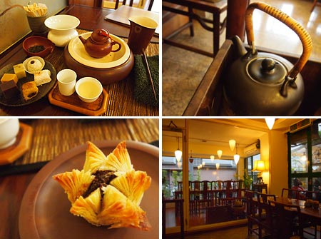
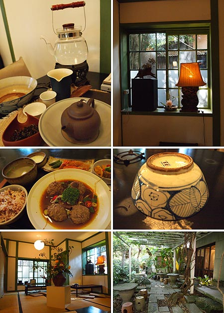

台湾大学近くの茶芸館。
学生街にあるせいなのか、カジュアルな感じで工夫茶を楽しめる感じ。
ここは工夫茶のちまちまとした道具がちゃんとそろってて、形を愉しみたいひとにはよさげ。
---------------------------------------------
【回留】
台湾大学近くの茶芸館。
学生街にあるせいなのか、カジュアルな感じで工夫茶を楽しめる感じ。
ここは工夫茶のちまちまとした道具がちゃんとそろってて、形を愉しみたいひとにはよさげ。
---------------------------------------------
【回留】
{kind=link}

永康街にある有名な茶芸館。 工夫茶以外のカフェメニューも多いから入りやすいお店なのかなー。 茶船（茶壺（きゅうす）を入れてお湯をそそいだりするもの）の趣味がよかった。 聞香杯（香りをかぐための湯のみ）は無し。シンプル工夫茶。 --------------------------------------------- 【吉祥草】{kind=link}

松山空港近くの茶芸館。 ランチもいただいた。ランチも込みで440元。他の茶芸館と比べると安いかも。 ここの名物はさっぱりわけのわからない日本語メニュー。 以下転載 「ネギの味の赤い翼の魚」 「あんかけの香ばしいニワトリの足」 おしゃべり好きな店員さんがいて、メニューのことを聞いたら「日本人誰都笑笑！」って言ってた。 直すつもりは無いらしい。 サンルームみたいな雰囲気のある離れ風？の席がおすすめ。 でも雨が降ると雨漏りするので注意。私が居たときにスコールがあったのだけど、店員さんがバケツもってやって来た。 凍頂烏龍茶。金木犀を中心とした花の香りも豊かでややタンニン強め。アフターは蘭の香り --------------------------------------------- 【徳也茶喫】{kind=link}

なんだか賛否両論らしい茶芸館。 199元で工夫茶とお菓子食べ放題。なかなか魅力的。 でも最初の一皿はお店のおまかせ。それを食べた後は好きなのを選べる。 蓮の花パイがほかほかな上にパリパリで甘さも控えめで美味しかった！ もうこれだけでいいやって、こればっかり注文した。 この店は写真撮影にフラッシュ使って顰蹙を買う日本人が多いといううわさを聞いてたけど、実際に目の当たりにしてびっくりした。あわわ。。。 --------------------------------------------- 【紫藤盧】{kind=link}

日治時代の建物をつかっている茶芸館。 たたみの部屋もあって広々としているからのんびり。たたみに座ると日本人の血がさわさわ。あまりにも居心地よくて4時間くらいいた。 ちなみにランチもほどよく日本風味。 そういえばここにはぎょっとするほど高いプーアル茶がぞろぞろメニューにあった。 (4g 3200元！日本円で9000円ぐらい！） 白毫烏龍、金風沐荷。はちみつのかおりほんのり。